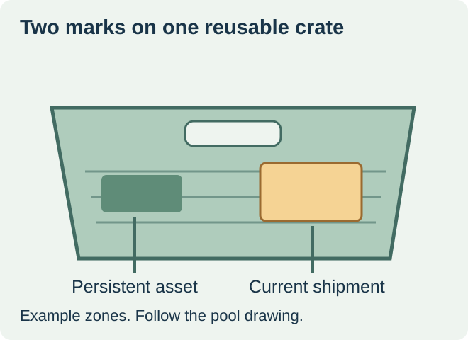
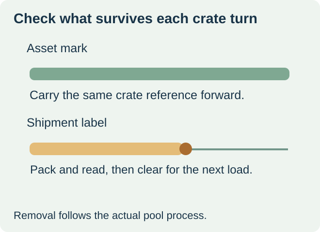

Use the pool owner’s durable mark for the crate and an approved replaceable label for the current shipment. If the crate already carries its permanent identification, leave that zone visible. Buy the outbound label for the actual crate model, approved position and removal route. A label that worked on a one-way corrugated box may be unsuitable for a crate that must make another trip.


Separate what the crate is from what it carries
A reusable crate can carry one produce lot today and another after its return. Its asset reference supports the pool’s crate handling. The outbound label describes the current load as agreed with the receiver. If the operator must associate the two in software, capture that link at packing and replace it at the next load. GS1 gives returnable crates and trays as examples of assets that can use its returnable asset identifier. Use the asset format that the actual pool specifies. GS1’s returnable asset explanation
| Mark | Lifetime to agree | What to protect or verify |
|---|---|---|
| Pool or asset mark | Across the crate turns specified by its owner | Position, visibility and authority for replacement |
| Current shipment label | From packing through the applicable receiving and return step | Current information, readable location and pool-approved removal route |
| Old shipment label | End of previous crate turn | Removal and a clear approved placement before the crate is released again |


Use the placement and label approved for the crate
Ask the pool operator for the drawing or placement sheet for the exact model. Identify a dedicated patch, card holder or other permitted area, and check whether the program requires a specific label stock or supplier. Tosca’s produce crate sheet links placement on designated wall areas to removal at its wash facilities. That is one program’s example. Confirm the current requirements for your pool and crate model. Tosca’s produce crate label specification
For a hypothetical produce case, a packer receives returned crates with the asset mark intact and a stale shipment label left on one side. The next shipment label belongs in the pool’s approved patch after the crate is cleared for reuse. If the old label is still present or the asset mark is damaged, use the crate owner’s exception process so receiving sees one current shipment identity.
Price the turn, including application and removal
Ask the buyer and pool owner to agree how the actual label will be applied, when the receiver last needs to read it, and how the previous label leaves the crate. Check the filled crate in the stacking orientation used at receiving. If removal happens through a pool wash, use the pool’s qualified construction and acceptance process. Where a holder is specified, quote the correct insert and verify it stays in place through handling.
Treat an asset label replacement as a separate request to the crate owner. For the shipment-label order, document only the approved construction and the fields needed for the current load. This keeps a routine new shipment from overwriting information that the pool needs on the next turn.
Discuss the unresolved label requirement
Send the crate model and pool owner, the approved shipment-label zone and removal requirements, a photo showing the permanent asset mark, the shipment fields, and quantities. Obtain the pool owner’s written stock and placement approval before ordering. Review food label options and prepare a label specification inquiry. The contact page opens an email draft and lists email or WhatsApp for attachments. Supply, proof options, testing, pricing and timing require project confirmation.